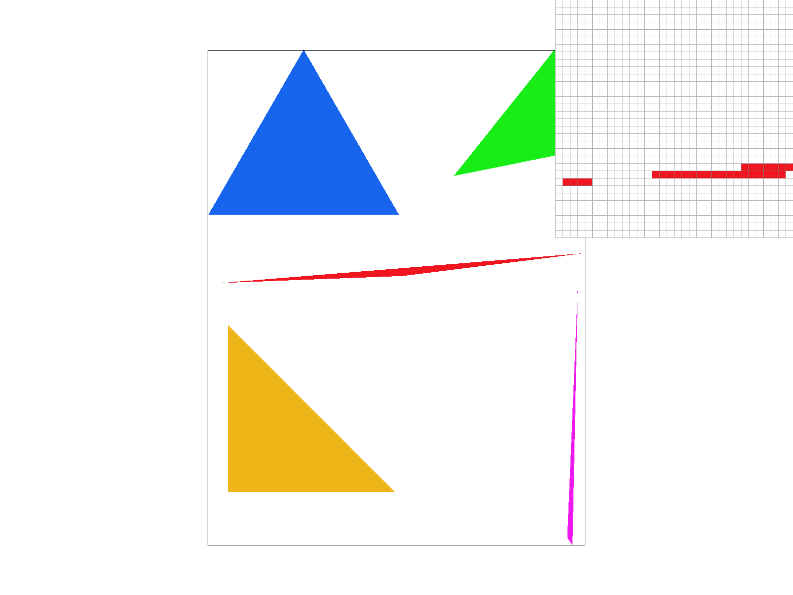
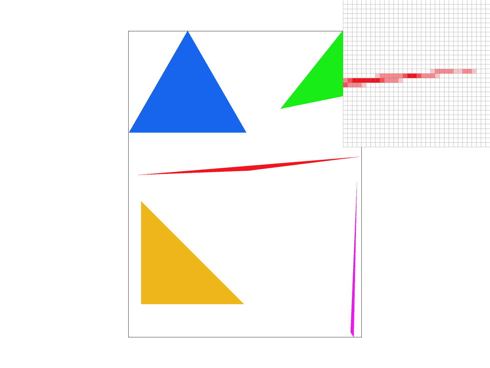

Overview
Give a high-level overview of what you implemented in this homework Think about what you've built as a whole. Share your thoughts on what interesting things you've learned from completing the homework.
Section I: Rasterization
Part 1: Rasterizing single-color triangles
My algorithm uses a couple of helper functions, which I will describe first, I will then conclude with a high level overview of the algorithm.
Helper Functions:
line_test: This helper takes as input a pair of points ((x_0, y_0), (x_1, y_1)) defining a line and a third point (x,y ) to serve as a query. It performs a line test by first defining two vectors:V = (x - x0, y - y0), i.e. the vector from the first line point to the query point, and
N = (-(y1 - y0), x1 - x0), i.e. a vector perpendicular to the line. Having defined these two vectors, the function returns the result of their dot product, which will be positive if the query point lies on the positive half-plane of the line, 0 if it lies directly on the line, or negative if it lies in the negative half-plane.
inside: Given three triangle points and a query point, this helper function determines if the query lies in the triangle. As a first step, the function checks which direction denotes the inside of the triangle if we follow the vertexi winding order of P0 --> P1, P1 --> P2, and P2 --> P0. The direction is determined by performing a line test using P0 and P1 as the two line points and P2 as the query point. If the direction line test is positive, then points in the triangle will lie on the positive half-plane of each triangle edge (or, conversely, on the negative half-plane if the line test is negative). Therefore, a direction variable is set to +1 or -1 depending on the result of th direction line test. Having determined the correct direction, the function then performs a line test for the query pixel on each edge (determined by each pair of triangle vertices) and multiplying it by the direction variable. If all line tests are >= 0 then that means the point lies on the correct side of each edge and the function returns True (and otherwise returnes False).
High-level overview: First, the algorithm determines the bounding box of the triangle by finding the maximum and minimum x and y coordinates in \{x0, x1, x2\} and \{y0, y1, y2\}. Having determined the bounding box, a nested for loop (one for x and one for y coordinates) from the minimum (integer) x,y to the maximum in increments of 1 is traversed. For each pair of (x,y) query points in the loop, the algorithm performs an inside test on the sample point (x + 0.5, y + 0.5) to determine if the point lies in the triangle or not. If the sample point lies within the triangle then the pixel (x,y) is filled.
Difficult Part: I had the most trouble with making the algorithm robust to triangle vertex winding ordering. At first my algorithm assumed that all 3 line tests being non-negative always means that a point lies in the triangle, however this is only true if P2 lies in the positive half-plane of the edge P0-->P1. If P2 lies on the negative half-plane then the line tests must all be non-positive instead. Adding this check resolved the issue.
Below is a render of basic/test4.svg with the pixel inspector zoomed into the left corner of the red triangle. As may be observed, there is a discontinuity between some pixels on the tip of the corner and the rest of the triangle due to aliasing.
|

|
Part 2: Antialiasing triangles
Data Structures: My algorithm primarily uses the sample_buffer to maintain a super-sampled image during rasterization, the size of this buffer will be the (width * height * sample_rate).
Additionally, I maintain a sqrt_sample_rate variable which is only computed once per sample rate change such that we don't have to perform a sqrt operation each time we need it.
Algorithm Walkthrough: When rasterizing a triangle, the algorithm first scales the coordinates of the triangle by sqrt_sample_rate in order to get it at the scale of the now super-sampled sample buffer.
Following this, rasterization of the triangle follows as usual, with the rasterizer looping over the pixels in the bounding box of the (now scaled) triangle.
After all the triangles are rasterized and resolve_to_frame_buffer is called, the algorithm will compute the color value of each frame buffer pixel by averaging the values of all sample_buffer locations pertaining to that pixel.
During frame buffer resolution process, the sample buffer coordinates for pixel (x,y) will be ((j * width * sqrt_sample_rate), (y * width * sample_rate)) for i,j in [0, sqrt_sample_rate].
Why is super-sampling useful?: Super-sampling is useful because it scales the sampling frequency by sqrt_sample_rate in each axis, reducing aliasing.
Increasing the sample frequency combats aliasing because it raises the Nyquist frequency (the rate which signal frequencies must stay below in order to avoid aliasing) for the signal, which is going to be half the sample rate.
In other words, because we are increasing the frequency of the samples, we are able to capture faster ocurring changes in the image.
What modifications did I make?: Firstly, the sample buffer data structure was dynamically updated to be able to fit the appropriate number of samples.
In both the set_sample_rate and set_framebuffer_target methods the sample buffer is resized to (width * height * sample_rate) to accomodate the samples.
The fill_pixel method was modified to access the sample buffer at the (y * width * sqrt_sample_rate + x) location in order to accomodate the scaled coordinates.
Lastly, the rasterize_triangle and resolve_to_frame_buffer methods were modified as described above.
Below is a side-by-side comparison of sample rates of 1, 4, and 16 with the pixel inspecto zoomed over the left corner of the red triangle in basic/test4.svg.
As may be observed, the corner becomes smoother as the sampling rate increases.
To have a smoother image, the ideal color (assuming there is only one triangle + the background in a pixel) would be the color of the triangle weighted by the proportion of the pixel which the triangle is filling.
However, solving this analyitically would be much more expensive, and so samples are taken to approximate this proportion.
Higher sampling rates yield better approximations of the true proportion, and thus higher sample rates yield smoother images with less aliasing.
|
|

|
|
Part 3: Transforms

|

|

|

|
Section II: Sampling
Part 4: Barycentric coordinates
Part 5: "Pixel sampling" for texture mapping
Part 6: "Level sampling" with mipmaps for texture mapping
Section III: Art Competition
If you are not participating in the optional art competition, don't worry about this section!